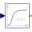

EngineV6_analyticV6 engine with 6 cylinders, 6 planar loops, 1 degree-of-freedom and analytic handling of kinematic loops |
|
Diagram
{kind=link}
Information
This information is part of the Modelica Standard Library maintained by the Modelica Association.
This is a similar model as the example "EngineV6". However, the cylinders have been built up with component Modelica.Mechanics.MultiBody.Joints.Assemblies.JointRRR that solves the non-linear system of equations in an aggregation of 3 revolution joints analytically and only one body is used that holds the total mass of the crank shaft:

This model is about 20 times faster as the EngineV6 example and no linear or non-linear system of equations occur. In contrast, the "EngineV6" example leads to 6 systems of nonlinear equations (every system has dimension = 5, with Evaluate=false and dimension=1 with Evaluate=true) and a linear system of equations of about 40. This shows the power of the analytic loop handling.
Simulate for 3 s with about 50000 output intervals, and plot the variables engineSpeed_rpm, engineTorque, and filteredEngineTorque. Note, the result file has a size of about 240 Mbyte in this case. The default setting of StopTime = 1.01 s (with the default setting of the tool for the number of output points), in order that (automatic) regression testing does not have to cope with a large result file.
Parameters (1)
| animation |
Value: true Type: Boolean Description: = true, if animation shall be enabled |
|---|
Outputs (3)
| engineSpeed_rpm |
Default Value: Modelica.Units.Conversions.to_rpm(load.w) Type: AngularVelocity_rpm (rev/min) Description: Engine speed |
|---|---|
| engineTorque |
Default Value: filter.u Type: Torque (N·m) Description: Torque generated by engine |
| filteredEngineTorque |
Default Value: filter.y Type: Torque (N·m) Description: Filtered torque generated by engine |
Components (6)
| world |
Type: World |
|
|---|---|---|
| engine |
Type: EngineV6_analytic |
|
| load |
Type: Inertia |
|
| load2 | ||
| torqueSensor |
Type: TorqueSensor |
|
|  | filter |
Type: CriticalDamping |